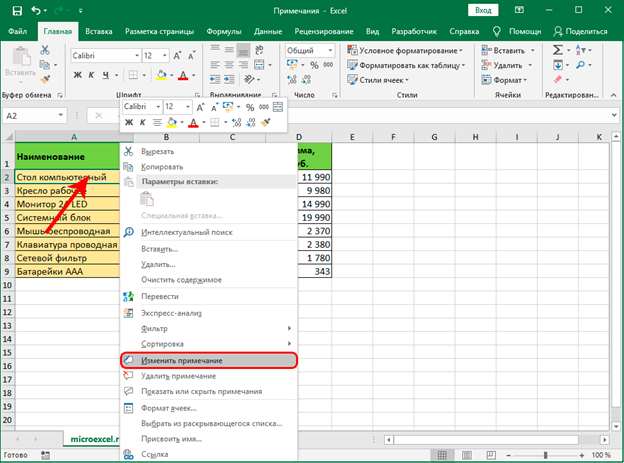
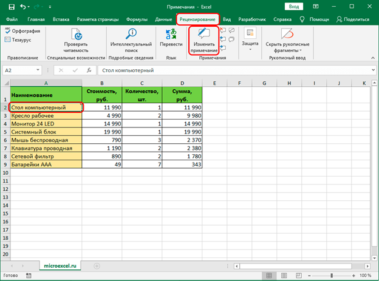
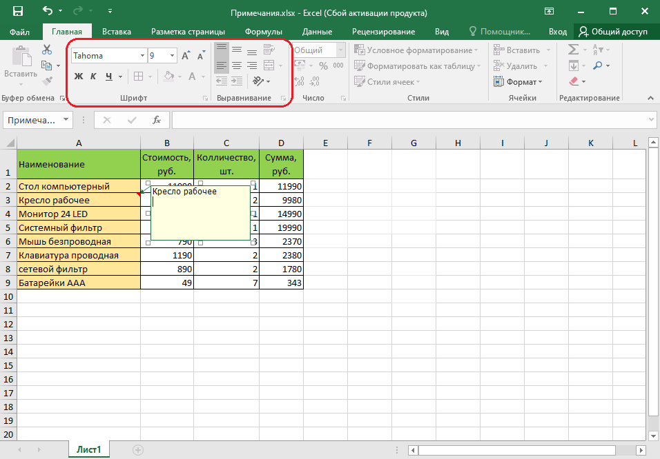
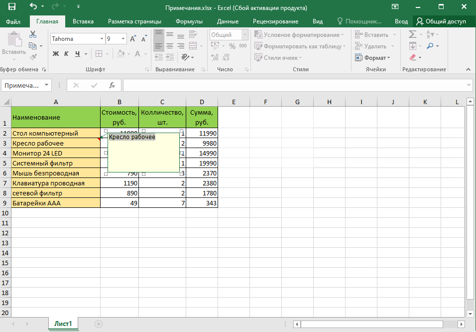
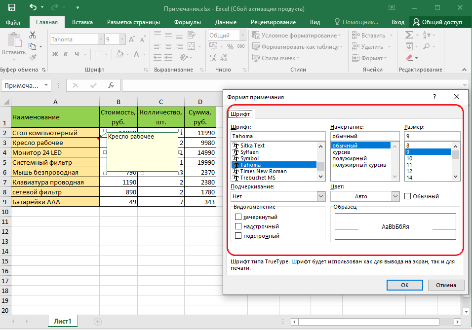

Microsoft Office Exel
Редактирование
Как и при работе с данными в ячейках, иногда возникает необходимость изменить содержимое ранее добавленных примечаний. Данное действие выполняется достаточно легко:
1. Правой кнопкой мыши щелкаем по ячейке с комментарием. В открывшемся перечне кликаем по команде “Изменить примечание”.

2. В результате появится поле, в котором мы можем отредактировать информацию согласно нашим пожеланиям, а также изменить его размеры, если потребуется.
3. Когда все необходимые корректировки выполнены, щелкаем в любом месте документа за пределами примечания, как и при его создании, чтобы завершить редактирование.
Альтернативный способ редактирования примечания:
Для корректировки примечания можно воспользоваться кнопкой “Изменить примечание”, которая расположена в группе инструментов “Примечания” (вкладка “Рецензирование”).

Как и при использовании контекстного меню, появится поле с комментарием, содержимое и границы которого мы можем изменить на свое усмотрение.
Оформление примечаний
Оформлять можно только отображенное примечание.
Для оформления примечания в основном используют элементы вкладки Главная.
Примечание можно оформлять целиком как объект, включая весь расположенный в нем текст. Для этого необходимо выделить примечание, щелкнув по его рамке. При этом должны отобразиться маркеры рамки; текстовый курсор в рамке примечания не должен быть отображен.

В примечании можно изменять оформление шрифта отдельных фрагментов текста. Для этого необходимо выделить фрагмент текста примечания. Выделять фрагменты текста можно перемещением по тексту указателя мыши при нажатой левой кнопке.

Расширенные возможности оформления примечания дает окно Формат примечания. 1. Выделите оформляемое примечание. 2. Нажмите кнопку Формат в группе Ячейки вкладки Главная и выберите команду Формат примечания. 3. Отобразится окно Формат примечания.

Параметры шрифта
В примечании можно изменить шрифт, размер шрифта, начертание (полужирный и/или курсив), подчеркивание. Все эти параметры устанавливаются точно так же, как и параметры шрифта в ячейках таблицы.Кроме того, во вкладке Шрифт окна Формат примечания можно изменить цвет шрифта.
Положение текста
Текст примечания по умолчанию расположен горизонтально и выровнен по верхнему и левому краю рамки.С использованием элементов группы Выравнивание вкладки Главная (см. рис. 13.7) можно изменить горизонтальное и вертикальное выравнивание текста относительно рамки примечания, а также направление текста. Все эти параметры устанавливаются точно так же, как и в ячейках таблицы. В отличие от оформления ячеек текст можно повернуть только на 90 градусов или оформить столбцом.
Некоторые дополнительные параметры можно установить во вкладке Выравнивание окна Формат примечания.
^ Наверх